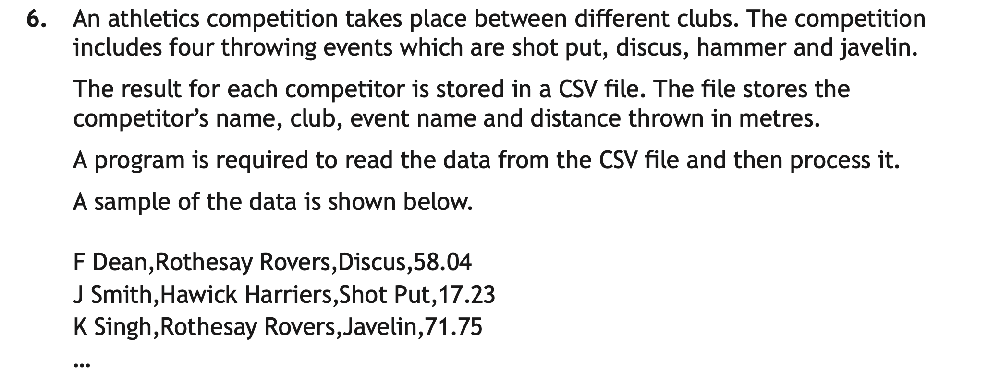
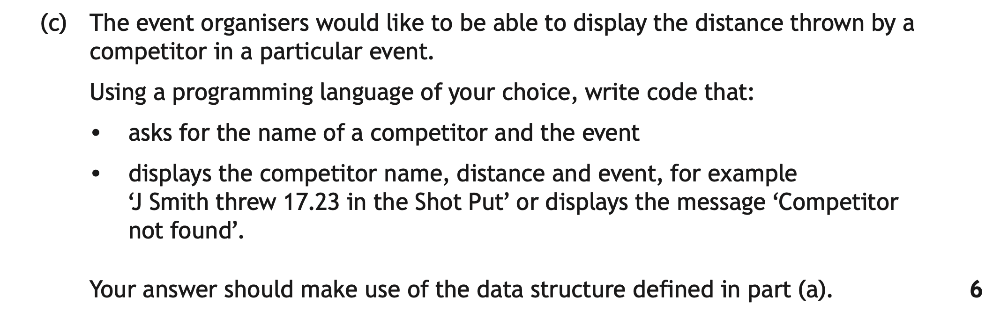
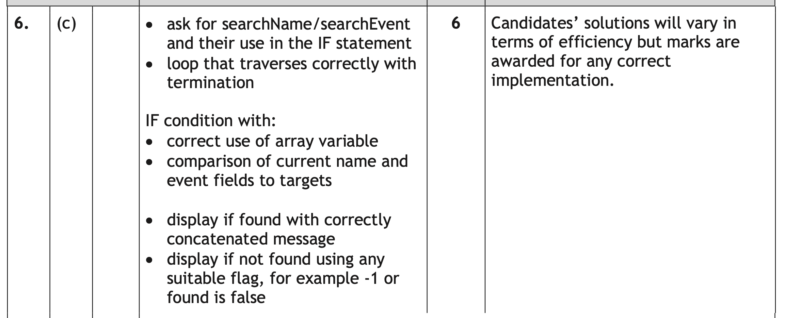

Standard Algorithms
A standard algorithm is a step-by-step process used to solve a specific problem.
Higher vs National 5: At National 5 the Algorithms used were:
- Traversing an Array
- Running Total
- Input Validation
These are now assumed knowledge and you could be expected to use these throughout practical programs, when designing solutions or reading/understanding code in the exam.
At Higher there are 4 Algorithms you need to know:
- Find Minimum
- Find Maximum
- Count Occurrences
- Linear Search
Key Terms
Fortunately, all of these algorithms operate in a similar way, with slight tweaks and additions between them.
For each algorithm, you will:
- Declare initial values
- Loop through the data structure
- Compare the target value(s) against the values in the current index of the data structure
- If the comparison is true you will update a value (dependant on algorithm)
So a template for a standard algorithm would be:
# Set Initial Values
# Loop through data structure
# If initial value with current value in list
# update initial value if True
These 4 Algorithms can be applied to a standard array, Parallel Arrays, or an Array of Records.
Each section will introduce the algorithm with a single array, but the practice questions will use one of the Higher Data Structures.
Find Minimum
The find minimum (find-min) and find maximum (find-max) algorithms are very similar, only differing in whether they use the < or > sign.
To find the minimum, we assume the first item is the smallest (or in some cases set the min as a very high value), then loop through the rest of the array. Whenever we find a smaller value, we update our minimum.
Pseudocode
- Declare a minimum variable, set it to the first item in the array
- Loop for each element in the array
- If current array value is less than the minimum
- Set minimum to current array value
- End if
- End for loop
In the following examples, the data structures are defined at the top. This would not be necessary in exam questions.
numbers = [33, 44, 55, 12, 19, 72, 60, 54, 13, 98, 2, 75]
minimum = numbers[0]
for index in range(1, len(numbers)):
if numbers[index] < minimum:
minimum = numbers[index]
print("The lowest number is", minimum)
Notice that, as we set the minimum as the 1st value in the array, we start our loop from index 1, for index in range(1, len(numbers)):
Using Find Minimum with Parallel Arrays
Find minimum is often used with parallel arrays — here we track the name of the youngest person as well as their age.
names = ["Sarah", "Martin", "Gill", "Andrew", "Gerald", "James"]
ages = [15, 32, 40, 12, 72, 16]
minimum = ages[0]
youngest_name = names[0]
for count in range(0, 6):
if ages[count] < minimum:
minimum = ages[count]
youngest_name = names[count]
print("The youngest person is", youngest_name)
Remember, as we want both pieces of data (the youngest age, and the name of the youngest person), we need to update both.
We could also have used a position variable here, you will see an example of this on later algorithms.
Using Find Minimum with Array of Records
Each algorithm can also be used with Array of Records. For this example, we will assume that the Array of Records holds the same data as the Parallel Array example, with a record structure of: DECLARE person AS RECORD (STRING: personName, INT: age). The array of records will be called people[].
minimum = people[0].age
youngest_name = people[0].personName
for count in range(1, len(people)):
if people[count].age < minimum:
minimum = people[count].age
youngest_name = people[count].personName
print("The youngest person is", youngest_name)
Find Minimum — Video Explanation
In this question, a Find Min is applied to an array of records. For the sake of this example, you can see the array of records declaration below:
# Array of Record Declaration
DECLARE pupilDataRecord AS RECORD (STRING: name, STRING: e-mail, STRING: attemptID, REAL: reactionTime)
DECLARE attemptArray AS ARRAY OF RECORD pupilDataRecord () * 10000
This is the question we are working through:


What Is The Question Asking?
Remember this questions is 5 Marks. Some important points:
numPlaysstores the number of attempts in a day for the game. Remember this is up to a maximum of 10,000- At the end of each day the game finds the fastest time
We are being asked to write code that
- Finds the fastest time (Find Min)
- uses the data structure and variables declared in part (a) - This is hugely important as your logic can be perfect but you will drop marks if you don't use the array of records & record structure correctly.
Working Through the Answer
Step 1: Initialise any variables
We want to find the fastest time, the fastest time will be the smallest, so it is a find min
We don't need to initialise the array, for these questions we can assume it is already initialised and populated. But before we start the main logic of our answer, we need to initialise the Min (fastestTime).
We can't set it to 0, as nothing is smaller than 0. So, we can either set it to the first time in the array fastestTime = attemptArray[0].reactionTime - (Check your record fields for the most suitable field to use, and the correct name. In this case for me, it is reactionTime). Or something suitably high, fastestTime = 99.99.
If you are setting it to a suitably high value, Check the sample data, as the data type must match, and the value given must be in the context of the question. I went with 99.99, as the value should be REAL, and the sample data given is 0.something.
# initialise fastestTime
fastestTime = attemptArray[0].reactionTime
If using the first time, You must ensure your array name matches part (a), and that you are using the correct field name from your record in part (a).
This along with step 4 would gain 1 Mark.
Step 2: Loop the correct number of times
Normally, you will just loop for the length of the array. However this question is slightly unusual, in that we are told that there are a maximum of 10,000 attempts. This means that there may not be, so we can't loop to the end of the array as there might not be data stored there.
Instead, we are told that numPlays stores the number of attempts made in a day. This is what we need to use to loop.
for counter in range(numPlays):
As mentioned, normally, you will just loop for the length of the array, but you need to read the question carefully, and not make assumptions.
Looping using numPlays would gain 1 mark
Step 3: Compare - (If Statement)
For all standard algorithms, once you have looped, within this loop you must compare. As this is a Find Min, we want to check if the current value attemptArray[counter].reactionTime is less than our current fastestTime.
if attemptArray[counter].reactionTime < fastestTime:
You can also do it the opposite way, if fastestTime > attemptArray[counter].reactionTime: just make sure you run through the logic in your head first.
The correct logic in the comparison would gain 1 Mark
Step 4: If The Current Time is Faster, Update Your Min
If the condition from Step 3 is true, we must update fastestTime to the current reaction time attemptArray[counter].reactionTime.
fastestTime = attemptArray[counter].reactionTime
Step 5: Make Sure You Have Used Correct Array & Record Field Names
As we are not asked to display or do anything with the fastest time, that is our algorithm complete.
However, you may still drop marks if you have not used the correct array name from part a) attemptArray, or the correct field name from part a) reactionTime.
Always double check this before moving on.
Each correct condition would gain 1 Mark each.
The final 2 marks of the 5 are:
- Use of the correct Array of Records variable from part a)
- Use of the correct record fields with dot notation

Suggested answer
So our solution above put together would be:
fastestTime = attemptArray[0].reactionTime
for counter in range(numPlays):
if attemptArray[counter].reactionTime < fastestTime:
fastestTime = attemptArray[counter].reactionTime
The SQA Reference Language version would be:
SET fastestTime TO attemptArray[0].reactionTime
FOR counter FROM 0 TO numPlays - 1 DO
IF attemptArray[counter].reactionTime < fastestTime THEN
SET fastestTime TO attemptArray[counter].reactionTime
END IF
END FOR
Find Maximum
This algorithm is almost identical to Find Min. All we need to do is switch the < to a >, and change any variables with the name min, or minimum, to max.
To find the maximum, we assume the first item is the largest, then loop through the rest of the array. Whenever we find a larger value, we update our maximum.
Pseudocode
- Declare a maximum variable, set it to the first item in the array
- Loop for each element in the array
- If current array value is greater than the maximum
- Set maximum to current array value
- End if
- End for loop
Here is a basic Find Max, using the same data from the corresponding example in the Find Min section. The changes have been highlighted RED.
numbers = [33, 44, 55, 12, 19, 72, 60, 54, 13, 98, 2, 75] maximum = numbers[0] for index in range(1, len(numbers)): if numbers[index] > maximum: maximum = numbers[index] print("The highest number is", maximum)
Here are the other 2 examples, but using Parallel Arrays & Array of Records:
Using Find Maximum with Parallel Arrays
Find maximum is often used with parallel arrays — here we track the name of the oldest person as well as their age.
Here I will use a position variable to track the data, instead of oldest_age variable.
names = ["Sarah", "Martin", "Gill", "Andrew", "Gerald", "James"]
ages = [15, 32, 40, 12, 72, 16]
maximum = ages[0]
max_pos = 0
for count in range(0, 6):
if ages[count] > maximum:
maximum = ages[count]
max_pos = count
print("The oldest person is", names[max_pos])
In this example, the max_pos variable, keeps track of the position of the highest value in the Parallel Arrays, updating the position each time the maximum changes.
This is useful when there are 2 or more pieces of data that you need to process and use when the min/max is found.
Using Find Maximum with Array of Records
Each algorithm can also be used with Array of Records. For this example, we will assume that the Array of Records holds the same data as the Parallel Array example, with a record structure of: DECLARE person AS RECORD (STRING: personName, INT: age). The array of records will be called people[].
maximum = people[0].age
max_pos = 0
for count in range(1, len(people)):
if people[count].age > maximum:
maximum = people[count].age
max_pos = count
print("The oldest person is", people[max_pos].personName)
Find Maximum — Video Explanation
Find Max & Find Min are really similar. On the SDD Practice Questions page, you will find some examples of Find Max & Find Min.
Count Occurrences
Count occurrences is very similar to linear search (more on that in the next section). The user enters a target/search term, or a specific one is given to hard code into the condition (This is the initialise values). The algorithm then searches the array. If the target is found, instead of recording position, it adds +1 to a total/counter.
The algorithm can search for exact matches, or apply conditional logic — values above a threshold, even numbers, uppercase letters, and so on.
For example, we could count how many pupils are in S5, we could count how many pupils have a score of over 70%, we could count how many names start with the letter H, and so on.
Pseudocode
- Set count to 0 - not to be confused with the loop counter (sometimes called counter/index) - you may have multiple counts depending on the question
- Optional - get target from user
- Loop for each element in the array
- If current array value is equal to target
- Set count to count + 1
- End if
- End for loop
Counting Exact Matches
Here we will apply it to a single array, use an exact match, and take the target from the user.
cars = ["Ford", "Ford", "Toyota", "Volkswagen", "Kia", "Nissan", "Honda"]
# Take in target make from the user
make = input("Please enter a make: ")
# Initialise our count to 0
makeCount = 0
for index in range(len(cars)):
# If current car make matches the user target
if cars[index] == make:
# Add 1 to the make count
makeCount += 1
print("There were", makeCount, "matching cars")
Lets say the user enters in Ford, we should get the message There were 2 matching cars.
Counting with a Condition (Range Check)
We are still just using a single array here, but we are counting based on a range, rather than an exact match. The target is also hard-coded, and we are checking how many percentages 50.0 and above.
percentages = [99.7, 100.0, 52.6, 13.9, 15.2, 88.1, 64.7, 22.5, 71.8]
target = 50.0
percentageCount = 0
for index in range(len(percentages)):
if percentages[index] >= target:
percentageCount += 1
print("There were", percentageCount, "values of 50% or more")
So we should get a message of There were 6 values of 50% or more.
Counting into Two Categories (Odd / Even)
The final example, we are still using a single array, and we have hard-coded values directly into the conditions this time. We also have 2 counts, odd_count and even_count.
For each value in the array, we will use Modulus - (pre-defined function, although is an operator in python) - if the calculation evaluates to 0, there is no remainder an so it is even, otherwise it is odd.
numbers = [99, 44, 55, 12, 19, 72, 60, 54, 13, 18, 2, 75]
# Initialise odd & even count variables to 0
odd_count = 0
even_count = 0
# loop through numbers array
for index in range(len(numbers)):
# if current value % (modulus) 2 returns 0, there is no remainder and even_count increases by 1, otherwise it is odd
if (numbers[index] % 2) == 0:
even_count += 1
else:
odd_count += 1
print("There were", even_count, "even numbers")
print("and", odd_count, "odd numbers in the list")
We should get 2 messages: There were 7 even numbers along with and 5 odd numbers in the list.
Count Occurrences — Video Explanation
The following practice question shows how a Count Occurrences is used with Parallel Arrays. As with find min & max, the logic doesn't change, just how you access the data. The same is true of using it with an array of records.
Practice Question
Parallel Arrays normally crop up in larger standard algorithm questions. You are unlikely to be asked to declare parallel arrays, you would just be expected to use them.
(Check the Design Page for other examples using Data Flow), and the Standard Algorithm Page for further examples of Standard Algorithm questions. This is Count Occurrences.


The first image introduces you to the Parallel Array data structure that stores: dogID, dogName, branch & noOfVisits.
The second image is the question that uses this data structure.
What Is The Question Asking?
Remember this questions is 4 Marks.You need to write code that:
- asks the user to enter a branch name
- checks every dog in the arrays
- counts only the dogs that:
- attend that branch
- have made more than five visits
- displays the final count
Working Through the Answer
Step 1: Identify the important arrays
The question tells you to use:
branchnoOfVisits
These are parallel arrays, which means the same index position refers to the same dog. For example:
branch[2] = "Dundee" noOfVisits[2] = 6
So dog 2 attends Dundee and has made 6 visits.
Step 2: Get the branch from the user
You need an input variable, for example searchBranch. This stores the branch the user wants to search for.
searchBranch = input("Enter branch: ")
Step 3: Set up a counter
You need to count how many matching dogs are found. Start the counter at 0:
count = 0
Step 4: Loop through every dog
Because the data is stored in arrays, use a loop to check each position. This checks every item in the branch array.
for index in range(len(branch)):
Step 5: Use an IF statement with two conditions
A dog should only be counted if both conditions are true:
branch[index]matches the user's branch, ANDnoOfVisits[index] > 5
In Python:
if branch[index] == searchBranch and noOfVisits[index] > 5:
Each correct condition would gain 1 Mark each.
Step 6: Increment the counter
If both conditions are true, add 1 to the counter:
count = count + 1
This along with step 3 would gain1 Mark.
Step 7: Display the final answer
After the loop has finished, display the count:
print(count)
This along with steps 2 & 4 would gain 1 Mark

Suggested answer
The python version would be:
searchBranch = input("Enter branch: ")
dogCount = 0
for index in range(len(branch)):
if branch[index] == searchBranch and noOfVisits[index] > 5:
dogCount += 1
print(dogCount)
The SQA Reference Language version would be:
RECEIVE searchBranch FROM KEYBOARD
SET dogCount TO 0
FOR counter FROM 0 TO LENGTH(branch) - 1 DO
IF branch[counter] = searchBranch AND noOfVisits[counter] > 5 THEN
SET dogCount TO dogCount + 1
END IF
END FOR
SEND dogCount TO DISPLAY
Linear Search
A linear search, searches for a specific target, or set of conditions, and then processes this data if found, and normally displaying that it is not found if the condition isn't met.
There are two common variations: one records whether something is found or not, while the other records where it was found (its position in the list), and it's related data.
Recording Whether an Item is Found
Here, we are going to search through a single array, and use a found flag to identify if the user entered target is found or not.
names = ["Pearse", "Sophia", "Hugh", "James", "Elise", "Iona", "Quintin"]
target = input("Enter a name to look for")
found = False
for counter in range(len(names)):
if names[counter] == target:
found = True
if found:
print(target + " was found")
else:
print(target + " was not found")
In the example above, lets say target is entered as Hugh. We would get the message Hugh was found as when counter is 2, the condition would evaluate to true as names[counter] would be Hugh. This would set found to True.
However if target was entered as Rory, we would get the message Rory was not found. This name does not appear in the list, so found remains False, and the print in the else block is printed as a result.
Recording the Position of an Item
Sometimes, instead of just whether it has been found or not, we want the position. This is particularly helpful when we are using Parallel Arrays or Array of Records and want to return related data to the target.
To make sure we can identify whether the target is found or not, we set position = -1. -1 is not a position in the list, and as such, it position remains -1, we know the target is not found.
names = ["Pearse", "Sophia", "Hugh", "James", "Elise", "Iona", "Quintin"]
target = input("Enter a name to look for")
position = -1
for counter in range(0, 7):
if names[counter] == target:
position = counter
if position != -1:
print(target + " was found")
else:
print(target + " was not found")
This would give us the same result as the 1st example, but becomes much more useful when we use Parallel Arrays, as we will see in a moment.
-1 because it isn't possible to be at position -1 in the array. That way, we know that anything other than -1 must mean the item was found.Searching Parallel Arrays
Linear search is often used to find an item in one array, then read the corresponding data from a second, parallel array.
pupils = ["Pearse", "Sophia", "Hugh", "James", "Elise", "Iona", "Quintin"]
marks = [8, 10, 6, 6, 9, 7, 9]
target_name = input("Please enter a name: ")
position = -1
for counter in range(len(pupils)):
if pupils[counter] == target_name:
position = counter
if position != -1:
print(target_name + " got the mark " + marks[position])
else:
print("Target not found")
Again, this works in exactly the same way regarding finding the name, but we can then use the position to retrieve the correct mark.
So if we enter Quintin as the target, he will be found when counter is 6. This means we will get the mark at position 6, so the message will be Quintin got the mark 9.
Linear Search — Video Explanation
The following practice question shows how a Linear Search is used with Array of Records. As with find min & max, the logic doesn't change, just how you access the data.
Practice Question
In this question we will need to define a record and an array of records structure. I have skipped this bit of the question to focus solely on the Linear Search.


This question relates to athelets, and their name and club is stored, along with an event, and a distance.
We want to store 800 of these (not important for the question overall, but for the sake of the array I will declare below).
Going through the process from the Array of Records section on the Data Structures page, we end up with:
DECLARE athlete AS RECORD (STRING: athleteName, STRING: club, STRING: event, REAL: distance) DECLARE athleteArray AS ARRAY OF RECORD athlete () * 800
What Is The Question Asking?
Now we have our Record and Array of Records set up, we can dig into the Linear Search Properly.
Remember this questions is 6 Marks.You need to write code that:
- asks users to enter an athlete name and event.
- If found, their name, event and distance should be displayed
- if not, "Competitor not found" should be displayed
- To do this we will need to
- Loop through the array
- Compare the user entered values to the current values in the array
- Update a found flag or position if the athlete is found
Working Through the Answer
Step 1: Identify the Algorithm
You know from the placement of this question on this page it is a Linear Search, but in an exam, you need to work out what algorithm it is you are using. This will help you start your answer.
We know that the user is enter a name and an event. That narrows it down to Count Occurrences or Linear Search.
We can then confirm it is a linear search as:
- At no point does it mention a count
- We can see we need to print a message of "Competitor not found" if the targets aren't found.
- We are only printing 1 thing, not multiple.
Once you have correctly identified the algorithm, you will be in a better place to push on.
Step 2: Get the name and event from the user
You need input variables, for example searchName and searchEvent. This stores the name and event the user wants to search for.
searchName = input("Enter the name you want to search for: ")
searchEvent = input("Enter the event you want to search for: ")
This, along with ensuring you use the correct variable names you have declared here in Step 5 will gain you 1 Mark.
Step 3: Set a Found Variable or Position
As this is a Linear Search, we need a mechanism for identifying if the targets are found or not. We could use found = False, but as we need to gather the distance, as well as the 2 target values, I'm going to use pos = -1.
If the targets are found, and the pos updated, I will easily be able to retrieve the distance from the array and print it alongside it's related data.
pos = -1
Step 4: Loop through every Athlete
As with all standard algorithms, once my variables are intialised, I then loop through my array. Remember, the array here is called athleteArray.
for index in range(len(athleteArray)):
Based on the marking scheme, this gains 1 Mark, although in more recent exams, looping correctly is bundled with other marks as opposed to a single mark for looping.
Step 5: Compare the Values
As I have taken in 2 targets, I need 2 parts to my if statement. In this case, I am checking if searchName is equal to the name in the current record and searchEvent is equal to the event in the current record:
athleteArray[index].athleteNamematches the user's entered name, ANDathleteArray[index].eventmatches the user's entered event
In Python:
if athleteArray[index].athleteName == searchName and athleteArray[index].event == searchEvent:
This step, with the correct condition logic, will gain 1 Mark
Step 6: If the condition from Step 5 is True, update the position
If both conditions are true, set pos to index:
pos = index
Step 7: After the loop, print the appropriate message
The indentation for this step is really important, as a lot of pupils include this in their loop. If you include your print logic (the following code) inside your loop, it will print not found 799 or 800 times, instead of just once.
We need to use our pos variable, to identify if the targets are found. This should be done after the loop to avoid excessive printing.
To do this we need to check if pos is -1 or not, and then tailor the message to suit. Always check the question in case it wants specific wording for the messages. In this case, we have 2 examples: J Smith threw 17.23 in the Shot Putt and Competitor not found. We need to match these in our answer:
if pos != -1:
print(athleteArray[pos].athleteName + " threw " + athleteArray[pos].distance + " in the " + athleteArray[pos].event)
else:
print("Competitor Not Found")
2 Marks are available for this step:
- Using found or pos (Must also do Step 3 & 6 correctly) to decide which message to print
- Printing the correct messages, with variables correctly concatenated (the name, event and distance displaying correctly with the message)
The eagle eyed will spot that is only 5, and the question is out of 6. The final mark is for correct use of the array of records variable. Remember, you need to use the array name, dot notation, and the correct field names.

Suggested answer
The python version of the full answer we worked through would be:
searchName = input("Enter the name you want to search for: ")
searchEvent = input("Enter the event you want to search for: ")
pos = -1
for index in range(len(athleteArray)):
if athleteArray[index].athleteName == searchName and athleteArray[index].event == searchEvent:
pos = index
if pos != -1:
print(athleteArray[pos].athleteName + " threw " + athleteArray[pos].distance + " in the " + athleteArray[pos].event)
else:
print("Competitor Not Found")
The SQA Reference Language version would be:
RECEIVE searchName FROM KEYBOARD
RECEIVE searchEvent FROM KEYBOARD
SET pos TO -1
FOR index FROM 0 TO LENGTH(athleteArray) - 1 DO
IF athleteArray[index].athleteName = searchName AND athleteArray[index].event = searchEvent THEN
SET pos TO index
END IF
END FOR
IF pos ≠ -1 THEN
SEND (athleteArray[pos].athleteName & " threw " & athleteArray[pos].distance & " in the " & athleteArray[pos].event) TO DISPLAY
ELSE
SEND "Competitor Not Found" TO DISPLAY
END IF
Applying Algorithms to Parallel Arrays vs Array of Records
All three algorithms work with arrays of records — you simply specify which field to compare.
The table below should help highlight the different ways you access the data if you are using Parallel Arrays, vs Array of Records.
| Algorithm | Array version | Array of records version |
|---|---|---|
| Linear search | names[i] = target | array[i].name = target |
| Find max | marks[i] > marks[max] | array[i].mark > array[max].mark |
| Count occurrences | grades[i] = "A" | array[i].grade = "A" |